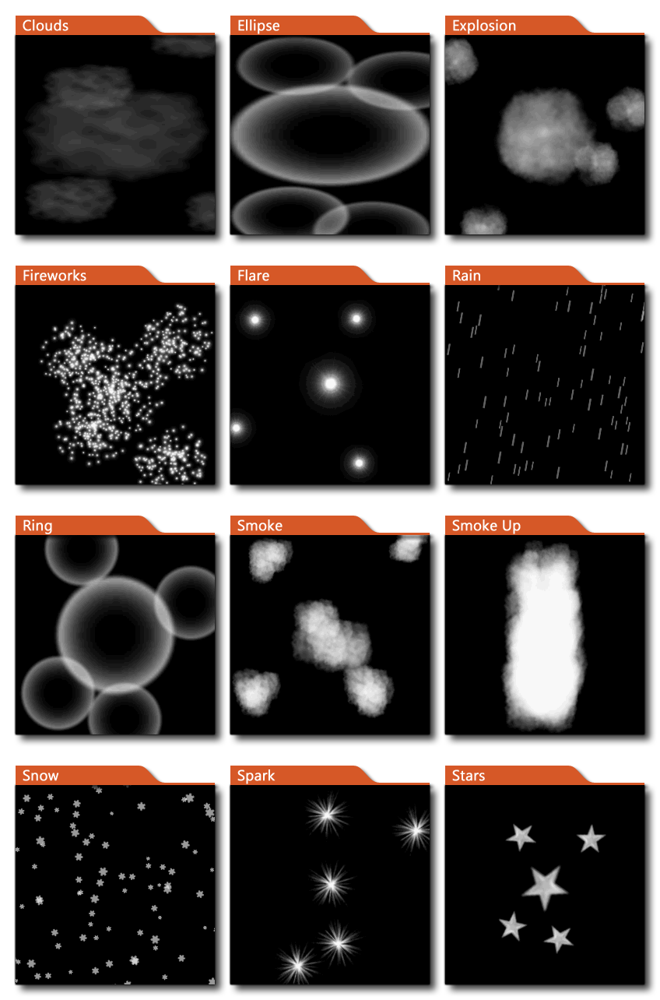

Effektemitter tun Effektemitter tun
Effektemitter tun Effektemitter tun Diese Aktion erzeugt einen integrierten Partikeleffekt, entweder über oder unter den Ebenen, die in deinem Spielzimmer gezeichnet werden. Sie wählen den Typ des zu erstellenden Effekts aus der Dropdown-Liste (siehe Abbildung unten) und legen dann die Position fest (die relativ zur Position der Instanz sein kann) und wählen eine Größe - klein, mittel oder groß - für den Effekt. Sie können auch die zu verwendende Farbe festlegen - der Alpha-Wert wird ignoriert - und entscheiden, ob der Effekt unter allen Ebenen im Raum oder vor allen Ebenen im Raum erstellt werden soll. Beachten Sie, dass die Positions- und Größenwerte nicht berücksichtigt werden, wenn Sie die Regen- oder Schneeeffekte verwenden, da der Effekt über den gesamten Bildschirm hinweg sichtbar ist. 
Streit Beschreibung Type Die Art des zu erstellenden Partikeleffekts (siehe Bild oben) X Die x-Position im Raum, um den Effekt zu erzeugen (in Pixel) Y Die y-Position im Raum, um den Effekt zu erzeugen (in Pixel) Size Die Größe des Effekts (klein, mittel, groß) Colour Die Farbe des Effekts (Alpha wird ignoriert) Where Ob der Effekt über oder unter den Raumebenen erzeugt werden soll
Der obige Aktionsblockcode prüft auf einen Mausklick und wenn einer erkannt wird, wird ein kleiner Effekt an der Mausposition erzeugt.